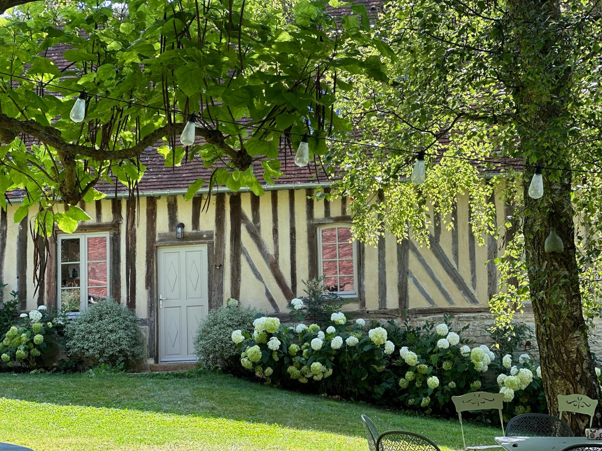

LA MAISON
LA MAISON

La petite maison se trouve au sein du domaine de La Grimouillière, dans le Pays d'Auge normand. Ancienne habitation du XVIIe siècle, elle a été entièrement rénovée pour offrir le confort d'aujourd'hui tout en préservant son caractère authentique.
La petite maison est indépendante, avec son propre jardin orienté du côté opposé à la maison principale, sans aucun vis-à-vis. Elle offre une vraie intimité tout en restant facile d'accès.
Au rez-de-chaussée, la salle à manger avec sa cheminée est l'espace de vie commun de la maison — un lieu chaleureux et accueillant pour partager les repas et se retrouver en fin de journée. Elle se prolonge par un salon avec une grande table, pensé pour la lecture, les jeux de société, les moments partagés et aussi pour quelques jours de télétravail. Le boudoir avec TV complète le rez-de-chaussée et peut être utilisé en couchage supplémentaire.
À l'étage se trouvent les deux vraies chambres, sous les poutres, ainsi qu'une pièce attenante avec deux lits simples — un agencement particulièrement pratique pour un couple voyageant avec des enfants.
LA MAISON EN BREF
CONFORT
Conçue pour accueillir confortablement une famille, un couple ou un petit groupe de proches, la petite maison est aussi bien adaptée à un week-end qu'à un séjour plus long.
Elle convient particulièrement bien à un couple avec enfants, grâce à la pièce attenante avec deux lits simples, mais peut aussi accueillir d'autres configurations selon vos besoins.
Le salon, avec sa grande table, permet aussi de prévoir quelques jours de télétravail dans un cadre calme et inspirant.